JM-Orgue
JM-Orgue is een virtueel pijporgel voor Windows, macOS en Linux. Het programma speelt Hauptwerk- en GrandOrgue-samplesets rechtstreeks af, ook grote surround-sets en Hauptwerk Custom Organ-definities, en je bespeelt het met een MIDI-klavier, een orgelconsole of de muis. Wat je speelt kan het meteen noteren, in gewoon notenschrift of in klavar, en afdrukken als PDF. Deze handleiding loopt het programma door; de schermafbeeldingen komen uit versie 0.9.16 en latere versies, de tekst beschrijft versie 0.9.53.
© Martijn van der Kolk. De schermafbeeldingen zijn gemaakt met demo-orgels en eigen testsets; netwerkadressen, toegangstoken en gebruikersmappen zijn onleesbaar gemaakt.
1. Aan de slag
Installeren
Download het installatiebestand van de laatste uitgave op de releasepagina van het project (voor Windows JM-Orgue_<versie>_x64-setup.exe) en start het. De installatie is per gebruiker en vraagt geen beheerdersrechten. Er is ook een MSI-pakket voor Windows, een DMG voor macOS en een AppImage of deb voor Linux.
Het programma zelf is vrij te gebruiken. De samplesets zijn niet meegeleverd: die haal je bij de makers zelf. Op de startpagina van de bibliotheek staan een paar makers die sets gratis aanbieden.
Bijwerken
JM-Orgue controleert zelf of er een nieuwe versie is. Is die er, dan verschijnt bovenaan een melding. Kies Nu bijwerken: het programma downloadt de update, controleert de handtekening, installeert en start zichzelf opnieuw. Wil je eerst alleen downloaden, kies dan Downloaden. Handmatig zoeken kan via Algemene instellingen → Update en feedback → Controleer op updates.
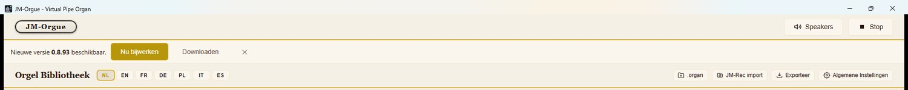
De drie hoofdschermen
Bovenin staan drie tabbladen: Orgel (spelen), Orgel-Instellingen (alles wat bij het geladen orgel hoort) en Algemene Instellingen (alles wat voor het hele programma geldt). Met F1, F2 en F3 schakel je er direct tussen. Het kruisje naast de orgelnaam sluit het orgel en brengt je terug naar de bibliotheek.
2. De bibliotheek
Na het starten zie je de orgelbibliotheek: een kaart per orgel met foto, naam, bouwer, plaats en het aantal registers. Klik op een kaart om het orgel te laden. Het raster toont acht kaarten naast elkaar en drie rijen in beeld; passen er meer orgels in de bibliotheek, dan blader je met de twee ronde pijlknoppen rechts in beeld (Omhoog bladeren, Omlaag bladeren) of met het scrollwiel. De knoppen zijn groot genoeg voor een aanraakscherm en verdwijnen zodra alles in beeld past.
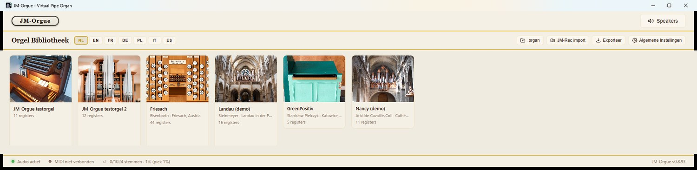
Samplesets vinden
Onder de kaarten staat het blok Meer samplesets met knoppen naar makers die sets gratis aanbieden: Piotr Grabowski, Sonus Paradisi, Lars Palo en Augustine's Virtual Organs. Elke knop opent de downloadpagina van die maker in je browser; JM-Orgue leest hun Hauptwerk- en GrandOrgue-bestanden rechtstreeks in, zonder omzetting. Daarnaast staat de knop Handleiding, die deze handleiding als PDF in de taal van het programma opent. Is er internet, dan toont de bibliotheek bovendien onder Beschikbaar om te downloaden een kaart per set die het project zelf aanbiedt: klik erop, kies een map, en de set wordt gedownload, uitgepakt en aan de bibliotheek toegevoegd.
Een orgel toevoegen
- .organ: kies een orgeldefinitie (GrandOrgue
.organof Hauptwerk-definitie). Je kiest het definitiebestand, niet de losse map met samples: alleen de definitie kent registers, koppels, tremulanten en eventuele extra opnameposities. - .orgue en .rar: kies een GrandOrgue-pakket (
.orgue) of een RAR-archief (.rar), ook een meerdelig archief: kies een van de delen en zet alle delen in dezelfde map. JM-Orgue pakt het één keer uit in zijn eigen mappakketten, toont de voortgang in de laadbalk en laadt het orgel; een tweede keer openen kost niets. Ontbreekt een deel, is het archief met een wachtwoord beveiligd of is het kapot, dan volgt een duidelijke melding. De uitgepakte map neemt schijfruimte in: je kunt de mappakkettenin de gegevensmap van het programma verwijderen om ruimte vrij te maken. - JM-Rec import: neem een sampleset in die met JM-Rec is gemaakt.
- Exporteer: maakt van een map met samples een orgeldefinitie (
.organ), die je daarna met de knop .organ kunt inladen.
Kaartknoppen: foto, zoeken, verwijderen
Wijs je een kaart aan, dan verschijnen rechtsboven in de foto drie knoppen: online een foto zoeken (wereldbol), zelf een foto kiezen (camera) en uit de bibliotheek verwijderen (kruisje). Verwijderen haalt alleen de kaart uit de bibliotheek weg; de bestanden op je schijf blijven staan. Houd je een kaart 3 seconden ingedrukt, dan zoekt het programma de foto opnieuw.
Bij online zoeken toont het programma een paar vrij te gebruiken foto's van Wikimedia Commons. Bovenin het venster staan de velden Kerk, Plaats en Bouwer, vooraf ingevuld uit de orgeldefinitie en de meegeleverde informatie; pas ze aan als ze niet kloppen en kies Zoek. Daaronder blijft een vrij zoekveld voor een eigen zoekterm. Klik een foto aan om hem over te nemen; de bronvermelding en licentie komen onder de kaart.
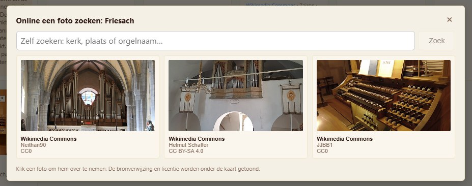
Downloadbare sets
Sets die je met de downloadknop in het programma kunt ophalen staan als tegel met een gestippelde rand in hetzelfde raster als je orgels. Een set die je al hebt geïnstalleerd, wordt niet meer aangeboden.
Hauptwerk Custom Organ (CODM) en het importverslag
Een Custom Organ-definitie (.CustomOrgan_Hauptwerk_xml) bevat alleen de opbouw van het orgel: klavieren, registers, koppels en tremulanten. De samples staan in aparte samplepakketten in de map OrganInstallationPackages, die naast of boven de definitie moet staan. JM-Orgue controleert dat vóór het laden.
- Ontbreekt een samplepakket, dan verschijnt het scherm Orgel is niet volledig met de ontbrekende pakketten (met naam) en het aantal registers dat zou klinken. Het orgel dat je nu hebt blijft actief tot je kiest.
- Pakketmap kiezen… laat je de map aanwijzen die
OrganInstallationPackagesbevat; de keuze wordt per orgel onthouden. Er worden geen bestanden gekopieerd of omgezet. - Gedeeltelijk laden laadt alleen de registers waarvan de samples er zijn; een balk bovenin herinnert je eraan en opent het Importverslag. Is er niets speelbaar, dan kun je alleen annuleren.
- Het Importverslag noemt wat er verwacht werd en wat geladen is, welke registers zijn overgeslagen en waarom, en waar JM-Orgue een benadering gebruikt (bijvoorbeeld: de tremulant klinkt als eenvoudige modulatie wanneer de golfvormen van de set niet te lezen zijn).
- Samples in Hauptwerks beveiligde
.hbw-formaat kan JM-Orgue niet lezen; een set die daarvan afhangt wordt als niet speelbaar gemeld. - Een register met maar één pijp (cimbelster, vogelzang, een losse klokslag) komt niet op het klavier maar als klikbare knop in het werk Effectregisters, net als bij gewone Hauptwerk-sets. Registers met meer pijpen blijven op het klavier.
- Shortcutpistons uit de definitie krijgen geen eigen knoppen: ze bedienen een register, koppel of tremulant dat al als knop bij zijn werk staat. Het verslag noemt per piston waar hij naar wijst.
- Koppels gedragen zich zoals de Hauptwerk-gids voorschrijft: een koppel verbindt een klavier met de windladen van het doel en schakelt niet door naar een volgend koppel. GrandOrgue-sets blijven wel doorschakelen.
- Is de definitie in de “ingekorte” vorm geschreven (velden heten dan alleen
a,b,c), dan meldt het verslag of de betekenis van die velden veilig kon worden afgeleid.
Een CODM-orgel met alle samples laadt zonder vraag. Geeft de definitie per register op dat de hogere boventonen sterker of zachter moeten klinken, dan past JM-Orgue dat bij het laden toe. Of het precies zo klinkt als in Hauptwerk is niet gecontroleerd: dat vraagt een volledige originele set en een referentieopname.
Het importverslag toont ook, alleen als informatie, wat de set zelf meebrengt: de waarden van de zwelkasten, een eventuele crescendo, de opgenomen tremulant-golfvormen en het windwerk (de balgen met hun eigenfrequentie en druk, en welke werken eraan hangen). De tremulant kan die golfvormen volgen en het windmodel het windwerk (zie hoofdstuk 7, Gedrag van de set).
Samplesets met WavPack of FLAC
Veel GrandOrgue-sets zijn met WavPack verpakt; de bestanden heten dan vaak gewoon .wav. JM-Orgue leest die rechtstreeks, inclusief looppunten en releases, en laadt ze snel doordat alleen het begin van elke opname wordt uitgepakt. Alleen als een bestand echt niet te lezen is (bijvoorbeeld een FLAC-bestand of een meerkanaals WavPack-bestand), meldt een balk bovenin hoeveel bestanden zijn overgeslagen.
3. Een orgel laden en bespelen
Laden
Bij het laden leest JM-Orgue van elk pijpgeluid het begin in het geheugen; de rest laadt het tijdens het spelen. Een grote surround-set kan daarom even duren; de voortgangsbalk toont hoever het is. Onder de indicator staat een knop Annuleren: druk je die terwijl de samples nog gelezen worden, dan keert het programma terug naar het orgel dat al klonk, zonder iets te veranderen. Handig als je per ongeluk de verkeerde kaart aanklikte. Is de audio-engine al aan het omschakelen, dan doet de knop niets meer.
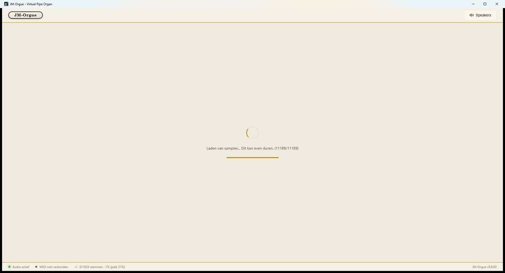
De motor
Na het laden staat de orgelmotor standaard aan zodra de set een motoropname heeft, en je hoort meteen een lichte wind. Wil je in stilte oefenen zonder dat windgeluid, zet de knop Motor in de werkbalk dan uit; de gele balk verschijnt pas als er echt geen motor loopt. Welke bijgeluiden standaard aan staan en hoe hard, regel je in de werkbalk met de kleine mixer bij de bijgeluiden-knop.
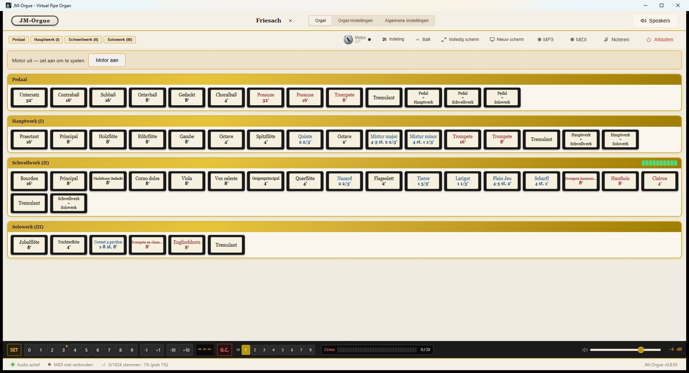
Registers, koppels en tremulanten
Elk werk heeft een eigen vak met zijn registers. Klik op een registerknop om hem te trekken; getrokken registers kleuren geel. De kleur van de naam geeft de familie aan: tongwerken staan bijvoorbeeld in rood, mixturen en kwinten in blauw. Klopt de automatische indeling bij een enkel register niet, dan kies je de kleurgroep zelf onder Registersortering (hoofdstuk 7). In elk vak staan ook de tremulant en de koppels (bijvoorbeeld “Hauptwerk + Schwellwerk”); de koppels gebruiken dezelfde lettergrootte als de registers. Een groen balkje rechts in de kop van een werk toont de stand van de zwelkast. De werken staan in de volgorde van de klavieren van het orgel (I, II, III), niet in de volgorde van het bestand. Heeft de set effectregisters (cimbelster, nachtegaal en dergelijke), dan staan die als klikbare knoppen in een eigen werk Effectregisters.
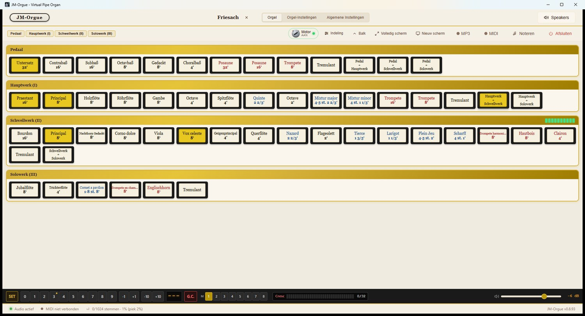
De setzerbalk
Onderaan staat de setzerbalk, met de bediening van een orgelconsole:
| Onderdeel | Werking |
|---|---|
| SET en 0–9 | Druk SET en daarna een cijfer om de huidige registratie op te slaan; druk alleen het cijfer om hem terug te halen. Een stipje bij een cijfer betekent dat er een registratie in staat. |
| −1 / +1, −10 / +10 | Stap naar de vorige of volgende registratie, of tien verder. |
| G.C. | General Cancel: alle registers uit. |
| M 1–8 | Geheugenniveaus: acht aparte banken met registraties. |
| Kopieerknop | Combinatie kopiëren naar…: roep een combinatie op, druk op de kopieerknop, kies met −10 / +10 en een cijfer het doel, en de combinatie wordt daarheen gekopieerd, ook over een blokgrens heen (bijvoorbeeld van 9 naar 10). De registratie die nu klinkt verandert niet. |
| Cresc | De generaal-crescendo (zie hoofdstuk 7). De balk toont de huidige trede. |
| Volumeschuif | Hoofdvolume. Dubbelklikken zet het terug op de standaardwaarde; met het scrollwiel verander je het in stappen van 1 dB. |
Elke knop van de setzerbalk kun je aan een knop op je eigen console koppelen: klik met de rechtermuisknop (of houd 3 seconden ingedrukt) en druk daarna op de knop op je console.
MIDI-kanaal per klavier leren
Hoef je niet eerst naar de Orgel-instellingen: rechtsklik op de naam van een werk boven de registers — of raak die 2 seconden aan op een aanraakscherm — en het programma vraagt om de laagste en de hoogste toets van dat klavier. Zo stel je het kanaal in zonder de speeltafel te verlaten.
4. De werkbalk
Boven de registers staat de werkbalk. Links staan de werken (Pedaal, Hauptwerk, …) als knoppen: daarmee zet je een werk in of uit beeld. Rechts staan de functies hieronder.
| Knop | Wat doet het |
|---|---|
| Motor | Orgelmotor aan of uit. |
| Indeling | Opent het indelingsmenu (zie onder). |
| Balk | Toont of verbergt de hoofdbalk met de tabbladen en de profielknop. |
| Volledig scherm | Speeltafelmodus: alleen de registers en de setzerbalk (F11). |
| Nieuw scherm | Opent een extra venster met dezelfde registers, bijvoorbeeld voor een tweede monitor of een tweede klavier. |
| MP3 | Neemt op wat je hoort. De opname komt in Documenten\JM-Orgue-opnames. Klik op de rode teller om te stoppen; daarna meldt het programma waar het bestand staat. |
| MIDI | Neemt op wat je speelt (alleen noten) als .mid-bestand. Klik op de blauwe teller om te stoppen en kies waar je het opslaat. |
| Noteren | Opent het notatievenster: noten verschijnen terwijl je speelt, in notenschrift of klavar, met balken, overdub en bewerken, en direct af te drukken als PDF (zie hieronder). |
| Afsluiten | Sluit de software én de computer af, na een bevestiging; de laatste stand wordt eerst bewaard. Rechtermuisklik of 3 seconden ingedrukt houden koppelt de knop aan een knop op je console. |
Het indelingsmenu
Met Indeling pas je het beeld aan op je scherm: Passend meet de knopgrootte zo dat alle registers in beeld passen, de min/plus-knoppen veranderen de breedte en de hoogte van de knoppen, en verder kies je werken onder of naast elkaar (verticaal), ronde in plaats van rechthoekige knoppen en de plaats van de koppels (in het werk of in een eigen balk). De keuze wordt per orgel onthouden.
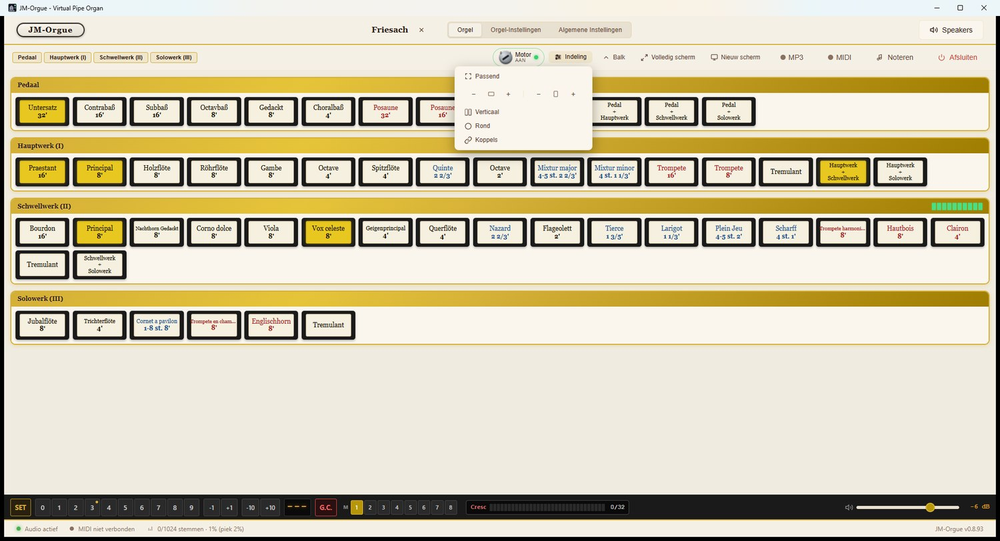
Volledig scherm (speeltafelmodus)
In deze modus verdwijnen de titelbalk, de Windows-taakbalk en de hoofdbalk: je ziet alleen de registers en de setzerbalk. Bovenaan staat een smalle strook met vier knoppen: Balken (de hoofdbalk tijdelijk terughalen), Motor (aan of uit), Volledig scherm uit en Afsluiten (software en computer afsluiten). Met F11 schakel je de modus aan en uit; Esc zet hem uit.
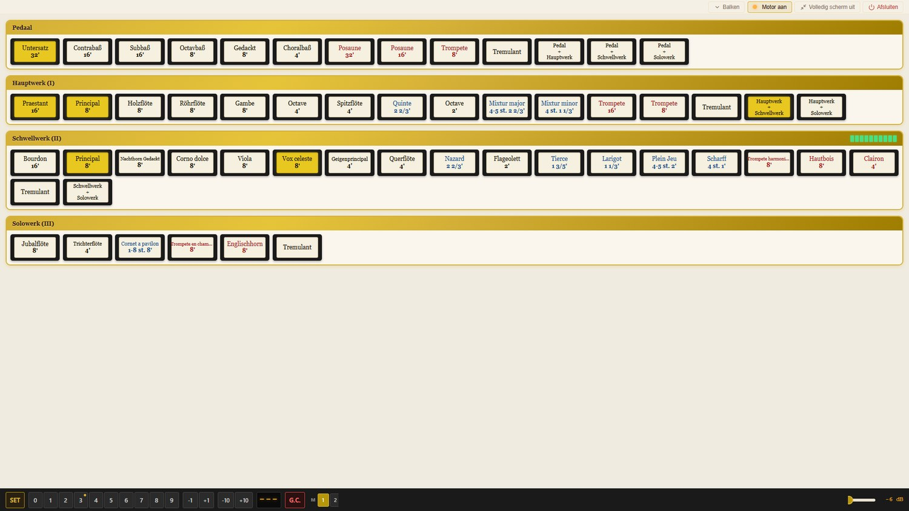
Een tweede scherm
Nieuw scherm opent een eigen venster dat je naar een andere monitor kunt slepen, of in een klein formaat naast het hoofdvenster kunt laten staan. Het heeft eigen indelingsinstellingen: staan de knoppen te klein, kies dan Indeling en stel de knopbreedte en de knophoogte in, of kies werken onder of naast elkaar.
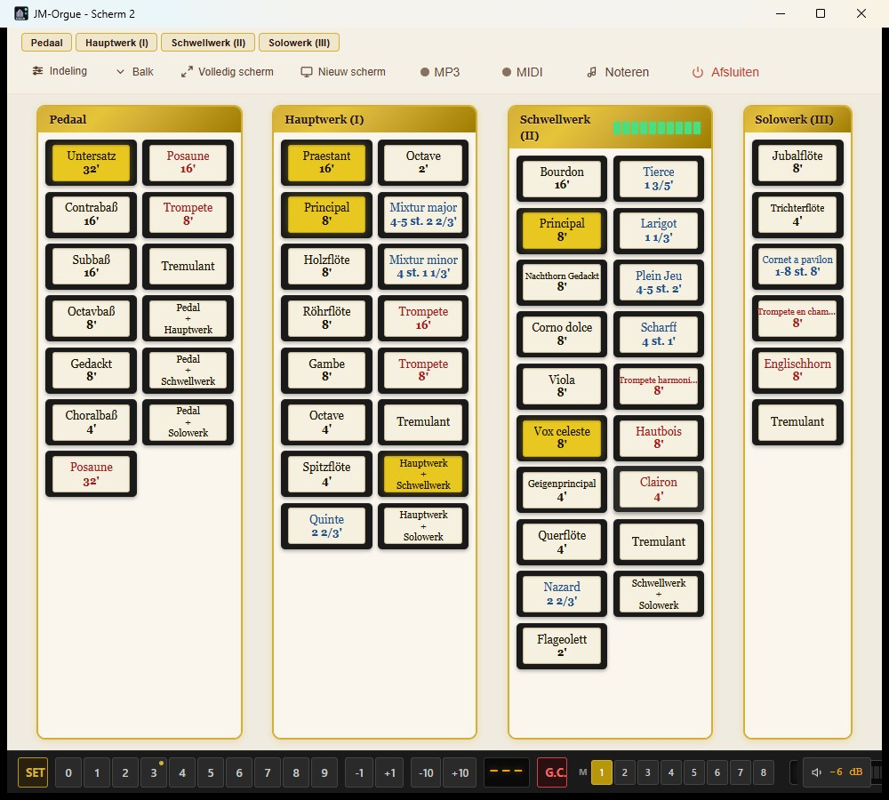
Het notatievenster: noten, klavar en PDF
Met Noteren opent een eigen venster waarin je spel wordt opgeschreven; er is geen tweede programma nodig om te componeren of een stuk uit te werken. Kies Nieuw… voor een nieuw stuk (titel, componist, maatsoort, toonsoort, tempo, aantal maten en balken) en druk op Opname: de opname begint bij de eerste noot die je speelt. Een stuk heeft meerdere notenbalken, bijvoorbeeld rechts, links en pedaal; elke balk heeft onder Balken & stemmen een eigen Kanaal met een knop Leer (speel één toets op het klavier dat op die balk moet komen). Speel je rechts, links en pedaal op drie MIDI-kanalen, dan komen ze zo tegelijk op drie balken terecht. Een nieuwe take (overdub) komt bij wat er al staat.
- Weergave: Notenschrift toont gewone notenbalken; Klavar toont klavarskribo, waarin de lijnen de zwarte toetsen zijn en de tijd van boven naar beneden loopt. Per balk kies je de hand (rechts, links, pedaal of R+L met een splitspunt) en met Bereik of de balken rond de gespeelde noten of over het hele klavier lopen.
- Afdrukken / PDF drukt de partituur af of bewaart hem als PDF, in de gekozen weergave. Onder Exporteren staan verder Opslaan als MIDI…, Opslaan als MusicXML (voor andere notatieprogramma's) en voor klavar Opslaan als SVG….
- Opslaan bewaart het stuk als JM-Orgue-partituur (
.jmscore), Openen… haalt het terug; een bestaand MIDI-bestand is als extra take te importeren. Op de tabbladen Invoer, Teksten & tekens en Afspelen voer je noten stap voor stap in, zet je teksten en tekens, en speel je het stuk door het orgel af.
Sneltoetsen in het notatievenster: Ctrl+N nieuw stuk, Ctrl+O openen, Ctrl+S opslaan, Ctrl+C kopiëren.
5. Meerdere luisterposities
Sommige samplesets zijn op meerdere plaatsen in de kerk opgenomen, bijvoorbeeld dichtbij, vooraan, halverwege en achterin. Zo'n set toont in de werkbalk de knoppen Perspectief met een knop per positie. Klik op een positie om hem in of uit te schakelen; je kunt er meer dan een tegelijk laten klinken. Rechts daarvan staat de luisterpositie: de schuif tussen “bij orgel” en “achter in de kerk” mengt vloeiend tussen de opgenomen posities.
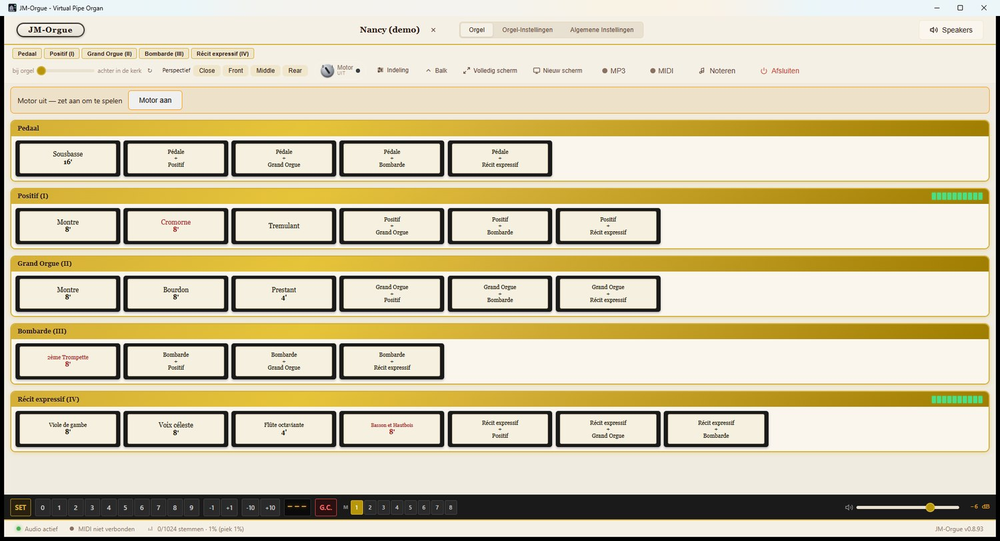
6. De instelwizard voor een nieuw orgel
Laad je een orgel voor het eerst, dan start automatisch de instelwizard “Orgel instellen”. Die loopt in zes stappen langs alles wat je voor je eigen speeltafel moet koppelen. Alles is later nog aan te passen, en je kunt de wizard opnieuw starten via Orgel-instellingen → Routing → Wizard. Later sluit de wizard en vraagt het bij het volgende openen opnieuw; Overslaan (stap 1) slaat hem helemaal over.
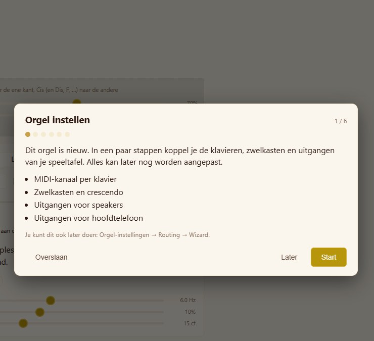
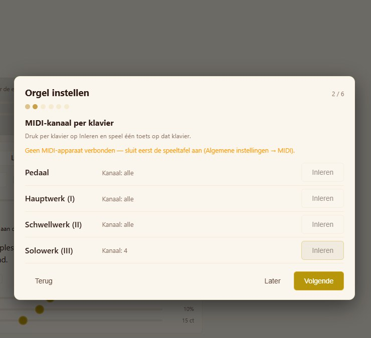
- Start: een overzicht van de stappen.
- MIDI-kanaal per klavier: kies bij elk klavier Inleren en speel een toets op dat klavier. Het programma onthoudt het kanaal. De knoppen zijn pas bruikbaar als er een MIDI-apparaat verbonden is (Algemene instellingen → MIDI); anders staat er een waarschuwing.
- Zwelkasten en crescendo: kies Inleren en beweeg de trede helemaal dicht en helemaal open. Hetzelfde geldt voor de generaal-crescendo. Heeft een set zwelkasten per rank (hoofdstuk 9), dan staan die hier ook.
- Uitgangen voor speakers: kies de driver en het apparaat, sla ze op als profiel “Speakers” en kies per klavier op welke uitgangen van je audio-interface het klinkt. Daaronder staan dezelfde keuzes voor het motorgeluid, de omgevingsruis en mechaniekklikken, de effectregisters en de tremulantruis, voor zover de set die heeft.
- Uitgangen voor hoofdtelefoon: hetzelfde voor het tweede profiel, bijvoorbeeld een hoofdtelefoonuitgang. Vanaf dat moment wissel je met de knop Speakers rechtsboven tussen de twee profielen.
- Klaar: de instellingen zijn bij dit orgel bewaard.
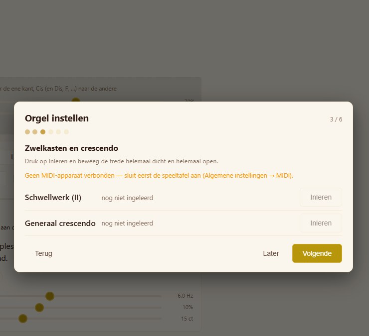
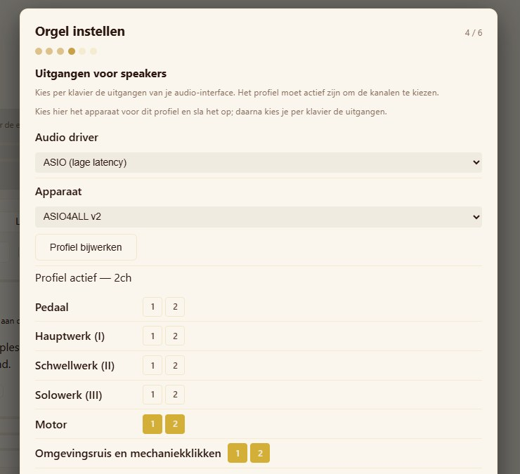
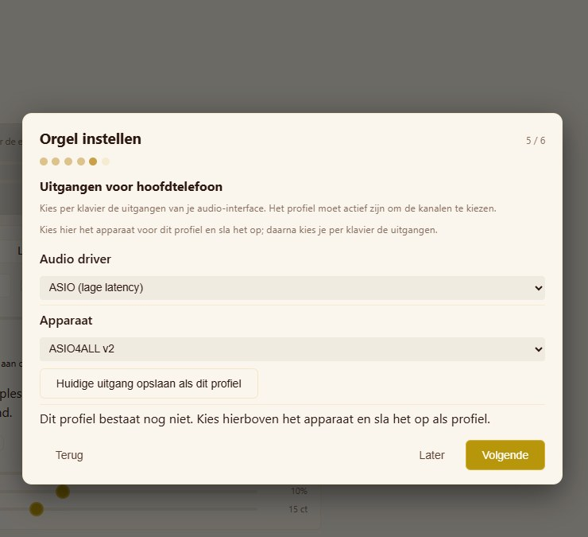
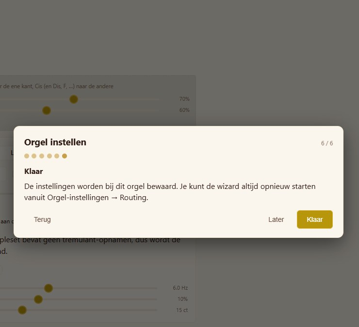
7. Orgel-instellingen
Alle instellingen die bij het geladen orgel horen, worden bij dat orgel bewaard. Bovenaan staan vijf tabbladen: Klank, Crescendo, Registersortering, Routing en Alles; dat laatste zet alle blokken onder elkaar.
Klank
Het eerste blok heeft de master-instellingen:
- Volume: het hoofdvolume van dit orgel.
- Stemming: “Origineel” speelt de pijpen zoals ze zijn opgenomen. Andere stemmingen (gelijkzwevend en historische temperaturen) stemmen de pijpen bij op basis van de gemeten toonhoogte van elke opname. Onder de keuze staat hoeveel pijpen een gemeten toonhoogte hebben. Wat de orgeldefinitie opgeeft gaat daarbij voor: een zwevend register met een opgegeven afwijking (Unda maris, Voix céleste) klinkt op het temperament plus die afwijking, een opname waarvan de toonhoogte in de definitie staat wordt daarop bijgesteld, en een set die aangeeft niet op de originele orgeltoonhoogte te spelen speelt altijd op de doeltoon. Bij Eigen stemming geef je zelf per noot de afwijking in cents. Met Scala-bestand laden… lees je een .scl-bestand (het wereldwijde formaat voor microtonale en historische stemmingen van de Huygens-Fokker-stichting); de ingelezen stemming verschijnt in de lijst en wordt bewaard voor volgende sessies.
- Fijnstemming: alles samen hoger of lager, in cents.
Nagalm regelt de galm. Heeft de set de akoestiek van de kerk al in de opnames, dan staat dat er (met een knop Terug naar de opname om de extra galm uit te zetten): extra galm is dan een kwestie van smaak. Je kiest tussen Algoritmisch (een berekende galm met RT60, vertraging, demping en ruimtegrootte, ook als preset) en Convolutie met een eigen impulsrespons (IR). Met Mix bepaal je hoeveel galm je hoort.
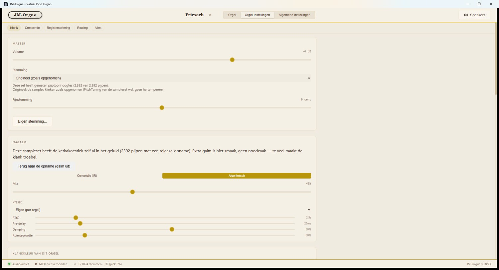
Klankkleur van dit orgel is een eigen toonregeling per orgel; de correctie voor je hoofdtelefoon of luidsprekers staat apart in de algemene instellingen. Het windmodel laat het orgel ademen: een akkoord met veel registers laat de winddruk zakken, zoals bij een echt orgel, en fluiten en tongwerken reageren daar verschillend op. Je kiest het aantal windgroepen (welke werken dezelfde balg delen), per groep de balggrootte, de demping, de maximale winddaling en het karakter van de wind.
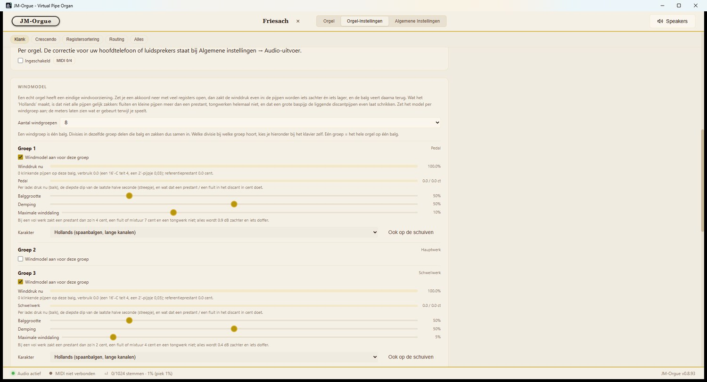
Bijgeluiden toont de doorlopende geluiden die de set bevat, zoals de motor en ruimteruis. Je regelt het volume, zet de Motor aan of uit en kunt het toetsmechaniek (klikkend klavier) inschakelen. Het toetsmechaniek is standaard uit omdat het veel geheugen kost en vraagt om het orgel opnieuw te laden.
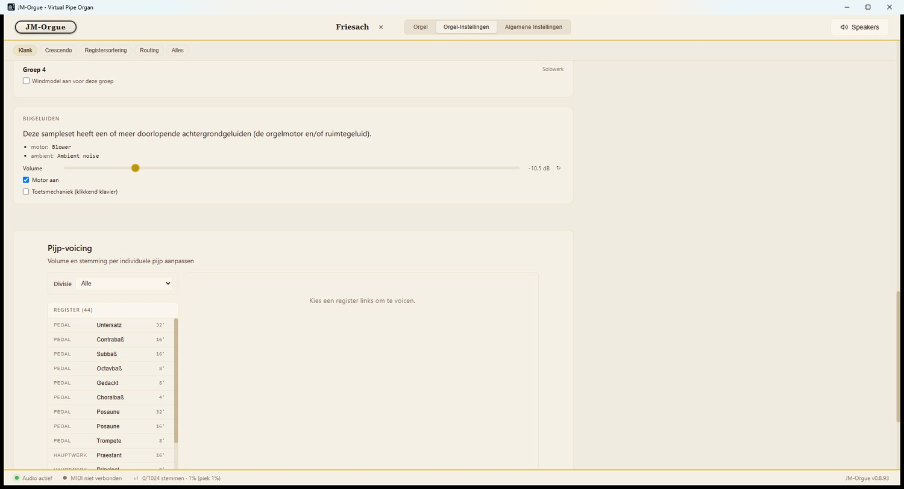
Onderaan staat de pijp-voicing: kies links een register en pas het volume en de stemming van elke afzonderlijke pijp aan. Wil je het hele register in één keer schuiven? Zet dan de schuiven op de gewenste waarde en druk op Pas toe op alle pijpen — iedere pijp van dat register krijgt dan dezelfde volume- en stemmingsaanpassing.
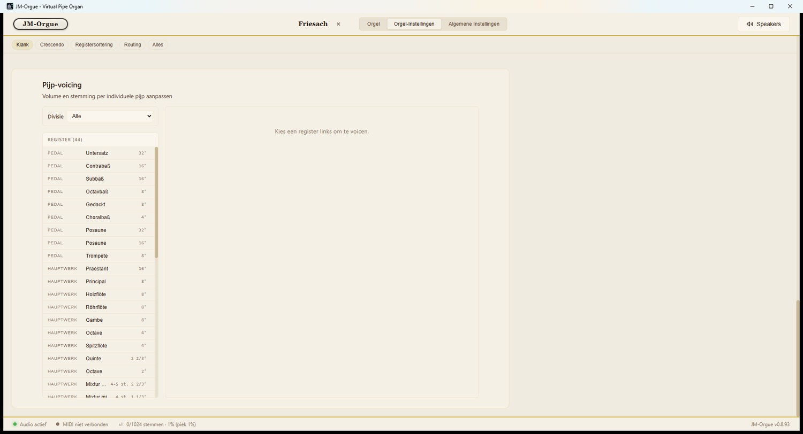
Gedrag van de set en registers niet laden
Onder Klank staat het blok Gedrag van de set (dit orgel) met vinkjes die bepalen of JM-Orgue de gegevens van de set zelf volgt: Niveaus van de set toepassen, Overgangen van de maker bij het loslaten, Koppels volgen de set, Koppels van de set volledig inlezen, Windwerk van de set, Tremulant volgt de golfvorm van de set en Stille staarten afkappen (met een drempel in dB). Ze gelden per orgel: een orgel dat je al gebruikte blijft zoals het was, een nieuw geïnstalleerd orgel volgt de set. Zwelkast van de set gebruiken staat altijd standaard uit; aan betekent dat de zwelkast begint met de demping en het filter die de set zelf opgeeft, voor werken waarvoor je zelf niets instelde. Na het wisselen van een vinkje laad je het orgel opnieuw.
Koppels van de set volledig inlezen leest bij een Hauptwerk-set ook de koppels die naar een ander klavier wijzen (met octaafkoppels en koppels binnen één klavier) in plaats van ze te raden. Met Windwerk van de set volgt het windmodel het windwerk dat een Hauptwerk-set beschrijft: elke balg van de set wordt een eigen windgroep, het luchtverbruik per pijp komt uit de set, en de middenstand van balggrootte en maximale daling is de waarde van die balg. Zo zakt bij een vol werk bijvoorbeeld de pedaalbalg apart in. De knoppen van het windmodel blijven werken en schalen die waarden; het windmodel zelf moet aan staan. Met Tremulant volgt de golfvorm van de set krijgt de tremulant van een werk de opgenomen golfvorm van een Hauptwerk-set als vorm (een gemeten cyclus van toonhoogte en sterkte) en de snelheid van de set, en elke pijp de diepte die de set voor haar opgeeft. De snelheid en diepte van de tremulantknoppen gelden dan niet; registers met echte tremulant-opnamen veranderen niet.
Het blok Registers niet laden laat registers die je niet gebruikt bij het laden weg, per orgel: dat scheelt geheugen en laadtijd. Open de lijst, haal het vinkje weg bij de registers die je niet nodig hebt (per register staat het geheugen dat het vooraf vraagt) en kies Toepassen en herladen. Alles laden zet alle vinkjes terug. De keuze wordt bij het orgel bewaard; een orgel zonder keuze laadt alles.
Crescendo
De generaal-crescendo trekt bij het bewegen van een crescendotrede stap voor stap meer registers. Je bepaalt zelf welke registers in welke trede komen:
- Ingeschakeld zet de crescendo aan; Stappen is het aantal treden.
- Auto-fill vult een voorstel in dat bij de registers van dit orgel past. Met de opties daaronder bepaal je of koppels meedoen, of kleurregisters (sesquialter, cornet, terts), 32′-tongen en chamades meedoen en of de octaafkoppels pas in het tutti komen. Wissen maakt de matrix leeg.
- In de matrix zet een klik op een vakje dat register aan of uit in die trede; Shift+klik zet het voor alle treden vanaf die trede.
- Leer pedaal koppelt je crescendotrede; onderaan kun je kanaal en CC-nummer ook met de hand invullen.
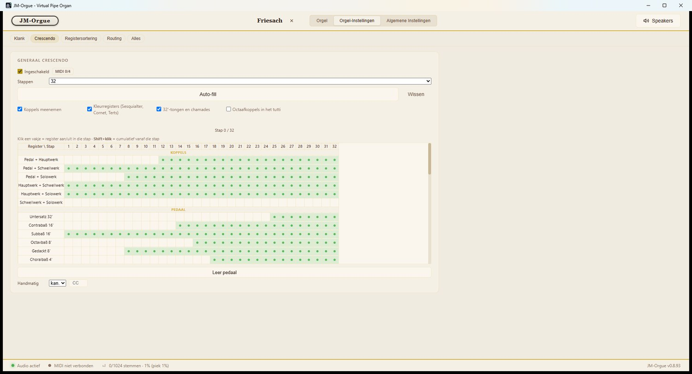
Brengt de set zelf een crescendo mee, dan staat naast Auto-fill de knop Van de set: de trappen van de set, beperkt tot de registers die dit orgel heeft en verdeeld over het gekozen aantal stappen. Er verandert niets zonder dat je op de knop drukt, en Ongedaan maken zet de stappen terug.
Registersortering
Hier bepaal je de volgorde van de registers in elk werk. Sleep een register aan het handvat om hem te verplaatsen. Per register zie je de voetmaat en de familie (de kleur van de naam). Met de pijltjes verander je de volgorde stap voor stap, en Origineel herstelt de volgorde uit het orgelbestand. Kleurt de automatische herkenning een enkel register anders dan je wilt, dan kies je per register zelf de kleurgroep: Grondstem, Vulstem of Tongwerk. Dat is puur visueel en wordt per orgel bewaard.
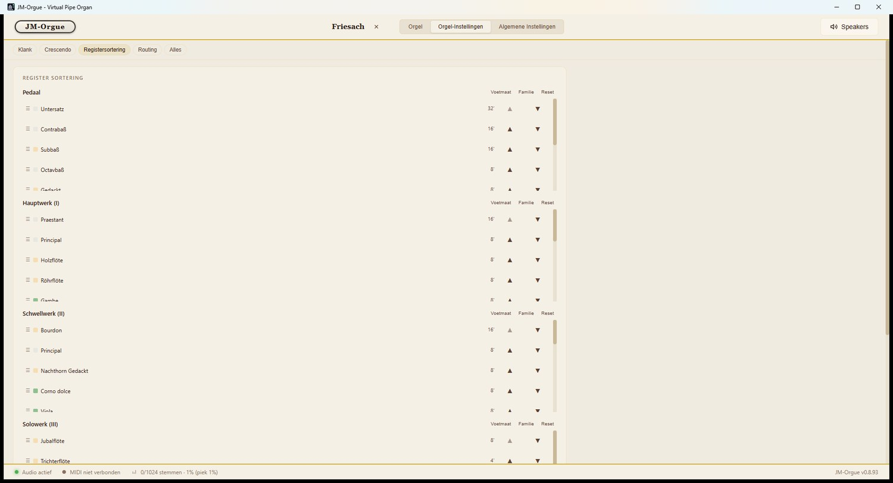
Routing
Dit tabblad koppelt je orgel aan je apparatuur. Bovenaan staat per klavier een blok:
- Kanaal: op welk MIDI-kanaal het klavier luistert (“Alle” = elk kanaal). Leer bepaalt kanaal en bereik door eerst de laagste en daarna de hoogste toets te spelen; liggen die te dicht bij elkaar, dan waarschuwt het programma in plaats van een bereik van een paar toetsen in te stellen. Zenden al je klavieren op hetzelfde kanaal, geef dan elk apparaat een vast kanaal onder Algemene instellingen → MIDI (hoofdstuk 8).
- Transp: transponeren in halve tonen. Bereik: laagste en hoogste toets. Kort octaaf: voor sets met een kort basoctaaf.
- Zwelkast: zet de zwelkast van dit klavier aan; er verschijnen dan knoppen om de trede in te leren, het minimale volume en de afsnijfrequentie bij een gesloten kast in te stellen. Standaard is dat −20 dB en 1500 Hz: de trede werkt dan in decibels gelijkmatig over de hele slag, zoals in Hauptwerk, en de klank wordt bij een dichte kast wat doffer. Lijkt de trede onderaan weinig te doen, kies dan een hogere afsnijfrequentie; wil je een dichte kast zachter, een lager minimaal volume (tot −24 dB). De trede valt ook rechtstreeks vanuit het orgelscherm in te leren: rechtsklik op de groene ledstrook naast de klaviernaam — of houd die 2 seconden vast op een aanraakscherm — en hetzelfde “trede dicht / trede open”-dialoog verschijnt.
- Windvoorziening: tot welke windgroep het klavier hoort.
- Pan en Uitgangen: de plaats in het stereobeeld en de uitgangskanalen van je audio-interface waarop dit klavier klinkt. Twee opeenvolgende uitgangen vormen een stereopaar; een los kanaal klinkt mono.
- C/Cis: verdeelt de pijpen over twee kanten, zoals de C- en Cis-lade van een echt orgel; de globale sterkte en afval staan in het blok erboven.
- Tremulant LFO: heeft de set geen echte tremulantopnamen, dan berekent het programma de tremulant. Snelheid, amplitude en toonhoogte stel je hier in.
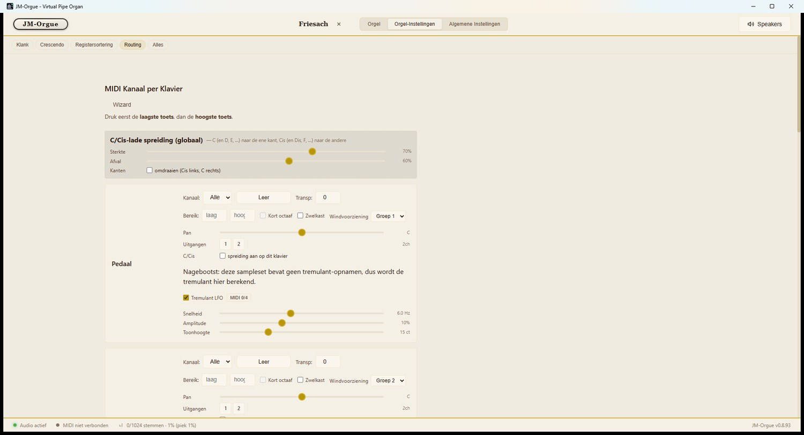
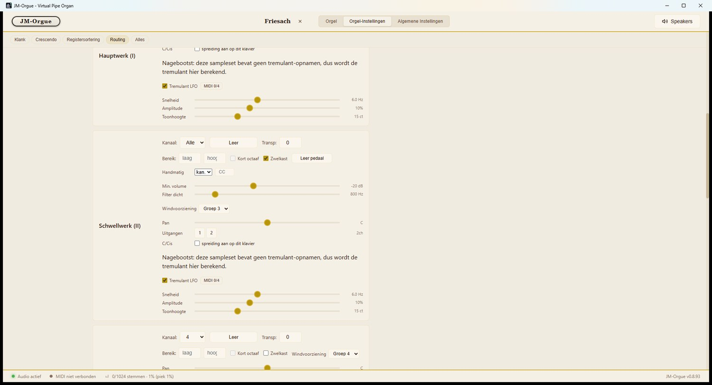
Daaronder staat Audio-uitgang bijgeluiden: per soort geluid kies je welke uitgangen het gebruikt. Motor is het motorgeluid; Omgevingsruis en mechaniekklikken geldt voor de ruimteruis en de klikken van registers en toetsen; sets met effectregisters (cimbelster, nachtegaal en dergelijke) en tremulantruis krijgen een eigen rij. Dit is vooral van belang bij een opstelling met meer dan twee uitgangen, waar de klavieren op andere kanalen klinken dan de standaard 1–2. Direct daaronder:
- Doorlopend klavier: toetsen buiten het opgenomen bereik van een register spelen de dichtstbijzijnde pijp, verschoven naar de juiste toonhoogte, in plaats van te zwijgen. Zo speelt een klavier van 61 toetsen door op een set met minder tonen. Bas- en discanthelften van een gedeeld register (Trompet 8 B/D, Cornet D, Mixtuur Bas …) stoppen op het deelpunt — de discant klinkt bovenin door, de bas onderin, maar niet over elkaar heen.
- Pijpen automatisch bijstemmen: stemt de pijpen op basis van hun gemeten toonhoogte bij, met behoud van bewust zwevende stemmen. Staat standaard aan.
- Toonhoogte-correctie: alles samen hoger of lager in cents (Nul zet het terug).
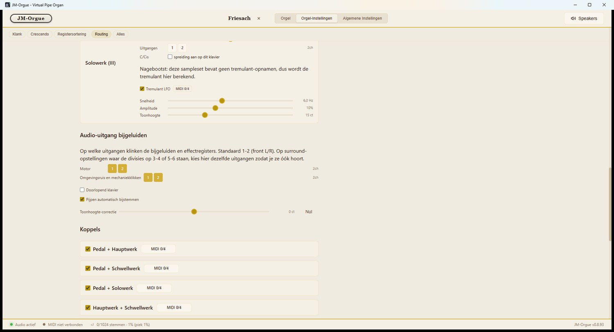
Verder naar beneden staan Koppels (aan- of uitzetten, met een MIDI-knop per koppel) en Koppels erbij: koppels die niet in de sampleset zitten maar wel uit de klavierindeling volgen; vink aan wat je erbij wilt en ze verschijnen meteen op de koppelbalk. MIDI-koppelingen is één lijst van alle MIDI-koppelingen van dit orgel, die je daar met de hand kunt aanpassen, verwijderen of toevoegen. Onderaan kun je met Open .mid een MIDI-bestand door het orgel laten spelen.
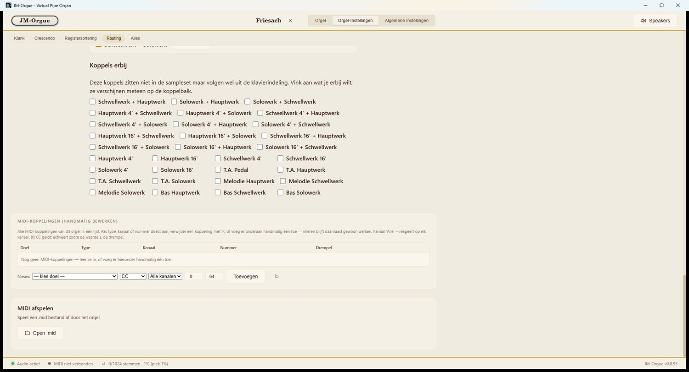
8. Algemene instellingen
Deze instellingen gelden voor het hele programma. De tabbladen zijn Audio uitvoer, Sample fix, MIDI, Knoppen inleren, Weergave en Update en feedback.
Audio uitvoer
- Audio driver en apparaat: voor de laagste vertraging kies je ASIO (bijvoorbeeld de driver van je audio-interface); WASAPI werkt met de standaard Windows-geluidskaart. De regel “Actueel” onderaan toont wat nu klinkt.
- Testsignaal: klik op een kanaalnummer om geluid naar precies die uitgang te sturen, zodat je hoort welke stekker bij welke luidspreker hoort.
- Polyfonie en Rekenkernen voor het mengen: het maximale aantal klinkende pijpen en het aantal processorkernen waarover het mengwerk verdeeld wordt. De standaardkeuze past bij je computer; de belastingsmeter toont het effect.
- Stereo-samples in stereo afspelen: behoudt het ruimtebeeld van stereo-opnamen. Uit betekent een mono-mix en halveert het geheugengebruik van zulke sets.
- Startbuffer per opname: hoeveel van elke pijpopname direct in het geheugen staat: 200 ms, 300 ms, 500 ms, 1 s of 2 s (standaard). Een kortere buffer scheelt veel geheugen en laadtijd; de rest wordt tijdens het spelen bijgeladen. De keuze werkt na het opnieuw laden van het orgel. Na genoeg geladen opnamen staat eronder een advies voor deze pc, op basis van de gemeten laadtijden; met Overnemen neem je het over. Er verandert niets vanzelf.
- Buffergrootte: kleiner is minder vertraging maar vraagt meer van je computer. Toepassen activeert de keuze.
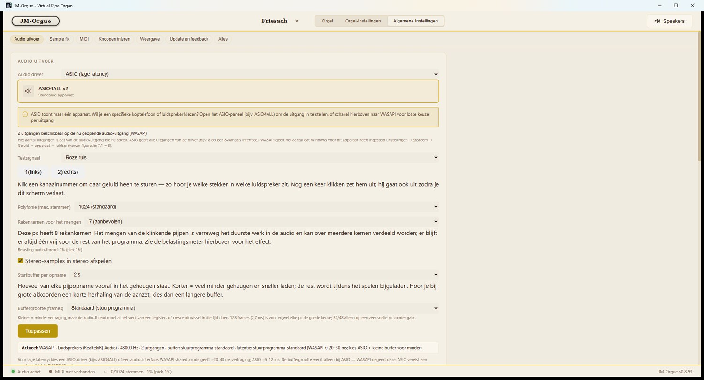
Meer onder Audio Uitvoer
- Laag naar een subwoofer (basmanagement): haalt het laag uit de hoofdkanalen en stuurt het, opgeteld, naar één subwooferuitgang (een vierde-orde Linkwitz-Riley-filter). Je kiest de Subwoofer-uitgang, de Kruisfrequentie (Hz) (30 tot 250 Hz) en het Niveau van de sub (dB). Standaard uit; uit kost niets.
- Geheugenplafond volgt het vrije geheugen: het plafond voor volledig geladen samples volgt wat er bij het laden van een orgel vrij is in het geheugen.
- Realtime-prioriteit voor het mengen: geeft de mengwerkers een hoge prioriteit, zodat de audio niet hapert als er veel anders draait. Onder het vinkje staat wat er actief is.
- Achter elke keuze van Startbuffer per opname staat het geheugen dat het geladen orgel dan vooraf vraagt, bijvoorbeeld “500 ms · 2,8 GB”.
- Samples in het geheugen: 16-bit compact (standaard) bewaart samples die exact in 16 bit passen ook als 16 bit, zonder klankverschil: half zoveel geheugen voor die sets. 16- en 24-bit compact spaart ook bij 24-bit sets een kwart, maar kost merkbaar meer rekenwerk; 32-bit (zoals vroeger) zet het uit. Werkt na het opnieuw laden van het orgel.
- Schijfcache van gedecodeerde samples (standaard aan): opnamen die duur zijn om te maken, zoals WavPack of opnamen die naar de samplerate van de uitgang worden omgerekend, worden na de eerste keer op schijf bewaard en daarna veel sneller geladen. Ze klinken precies hetzelfde. Met Maximum stel je de grootte in, eronder staat hoeveel er in gebruik is, en Cache legen maakt hem leeg.
Uitvoerprofielen bewaren twee complete uitvoer-instellingen, bijvoorbeeld luidsprekers via ASIO en een hoofdtelefoon via WASAPI, inclusief de kanaalkeuze per klavier. Kies de gewenste uitgang, klik Huidige selectie opslaan bij Speakers of Hoofdtelefoon, en wissel daarna met de knop Speakers rechtsboven of met een ingeleerde MIDI-knop. Het profiel dat nu actief is, is gemarkeerd.
Correctie voor hoofdtelefoon of luidsprekers past een toonregeling toe op de uitgang zelf (niet op het orgel): kies voor welk profiel hij geldt, schakel hem in en kies een preset uit de AutoEq-lijst, of importeer of exporteer een eigen correctie.
Daaronder staan de opties om het programma automatisch met Windows te starten, het laatst geopende orgel automatisch te laden, het kruisje op een extra scherm de hele software te laten afsluiten en de laatste registratie te herstellen. Het automatische MIDI-archief legt op de achtergrond alles vast wat je speelt, als .mid-bestand per sessie: het start bij de eerste noot en stopt na een stilte.
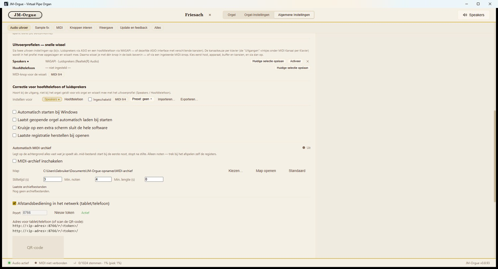
Met Afstandsbediening in het netwerk bedien je het orgel vanaf een tablet of telefoon in hetzelfde wifi-netwerk. Het programma toont een adres en een QR-code om te scannen, en je kiest welke onderdelen en welke werken op het externe scherm komen. De eerste keer vraagt Windows Firewall of JM-Orgue verbindingen mag ontvangen: kies “Toegang toestaan” voor privénetwerken.
Onderaan staat de samplerate. Die volgt de geluidskaart zelf: onder ASIO stel je hem in het paneel van de driver in, onder WASAPI in de Windows-geluidsinstellingen.
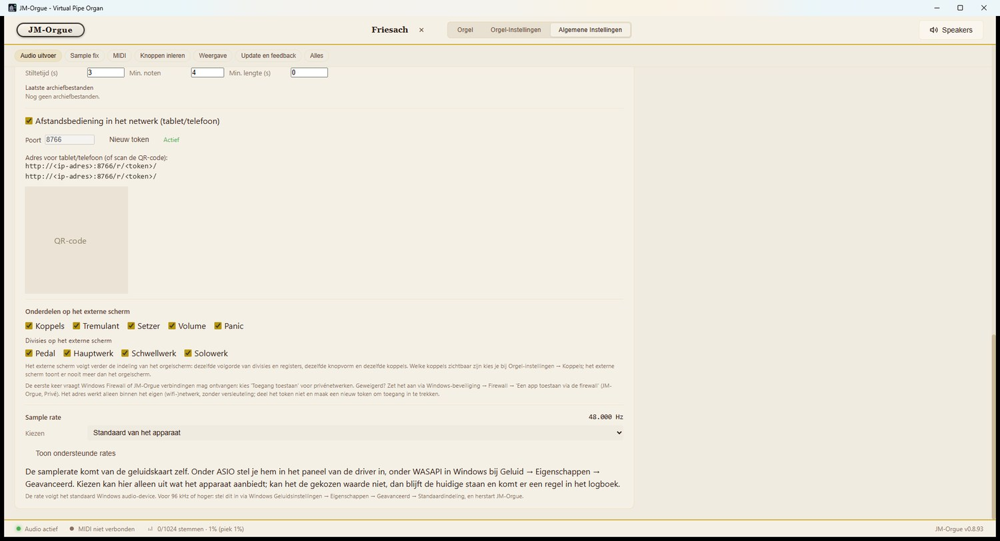
Sample fix
Twee hulpmiddelen om de samples van het geladen orgel op te schonen. Aanloop-stilte zoekt en knipt stilte vooraan in de samples weg (de stilte-drempel in dB en de aanloop die je wilt houden stel je zelf in); Loops zoekt een goede sustain-lus, bakt een crossfade voor een naadloze overgang en schrijft de lus-punten in het bestand, met de optie dit alleen voor bestanden zonder lus te doen. Met Scan bekijk je eerst wat er zou veranderen. De originelen worden eerst in een map _backup bewaard voordat de bestanden worden overschreven.
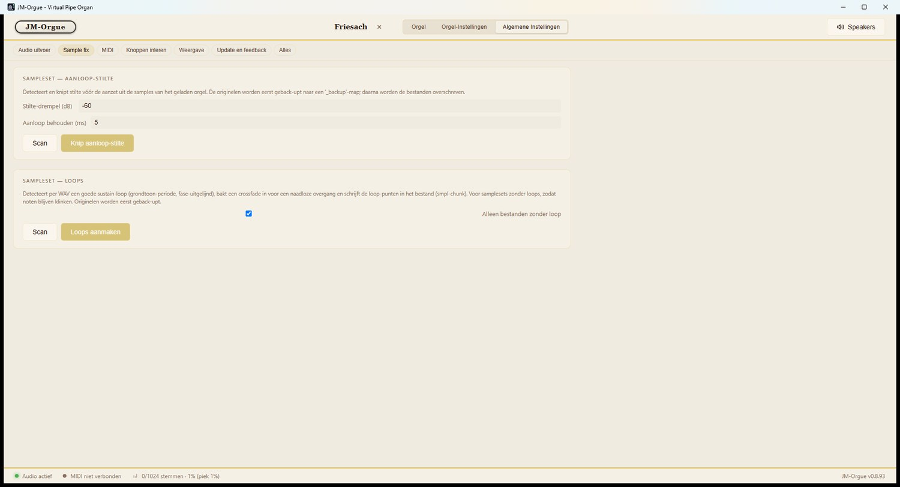
MIDI
MIDI invoer toont de aangesloten MIDI-apparaten (met Vernieuw apparaten zoek je opnieuw). Per apparaat kun je een vast kanaal kiezen: klavieren die allemaal op kanaal 1 zenden, bedienen zo toch verschillende werken, zonder dat je elke sessie kanalen hoeft te herstellen. Staat een apparaat op Standaard, dan verandert er niets. Onder Bluetooth MIDI zoek je met Scan naar draadloze apparaten; ook de inleerknoppen die op één toets reageren luisteren naar een Bluetooth-klavier. Terugkoppeling (MIDI-uit) laat je console meelichten met de registratie: kies het protocol (registerlampen via Note On/Off, een Hauptwerk-tekstdisplay of een Johannus-/Content-console), de MIDI-uitgang, het kanaal en de basisnoot. Elk register krijgt dan automatisch een nootnummer vanaf de basisnoot, of je leert per register de echte consoleknop in met Per register inleren.
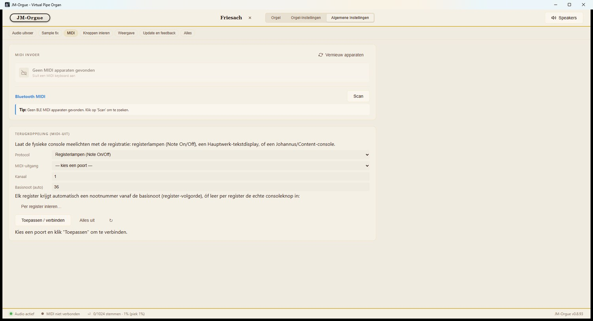
Knoppen inleren
Hier leer je de vaste consoleknoppen (pistons) in: afsteller, SET, preset-stappen, geheugenniveaus en computer afsluiten. De cijferknoppen 0–9 leer je op de setzerbalk zelf in (rechtermuisklik of 3 seconden ingedrukt houden).
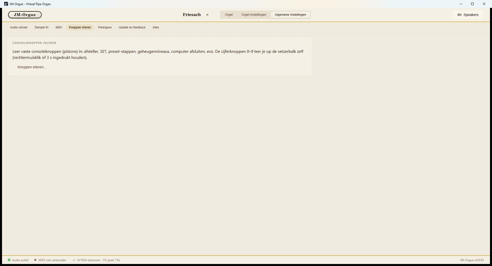
Weergave
Kies de taal van het programma (Nederlands, English, Français, Deutsch, Polski, Italiano en Español) en de sfeer: vijf kant-en-klare kleurenpresets (Basis, Klassiek hout, Modern minimalistisch, Nacht en Avond), of stel zelf kleuren samen, geef ze een naam en exporteer ze. Daaronder pas je het lettertype, de grootte en de dikte van de registertekst aan, en de achtergrond.
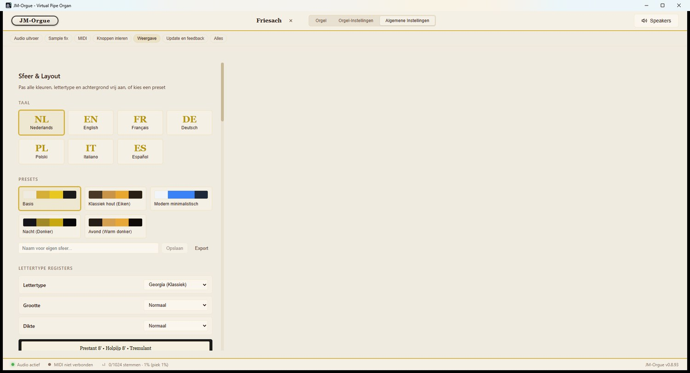
Update en feedback
Hier staan het versienummer, de bronvermelding van de gebruikte hoofdtelefoonpresets en luidsprekergegevens en de knoppen Feedback sturen, Via GitHub (issues) en Controleer op updates.
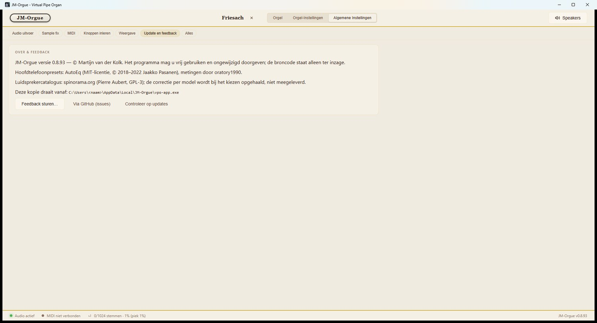
9. Akoestische configuratie van een set
Een orgeldefinitie kan verwijzen naar een extra bestand, JM-ACOUSTICS.json, dat de akoestiek van de set beschrijft: zwelkasten die aan een rank hangen in plaats van aan een klavier, impulsresponsen voor de galm, mengroutes en uitgangen. Heeft je set zo'n bestand, dan herken je dat aan een extra blok in Orgel-instellingen → Klank.
- Het programma leest het bestand en controleert het: de bestandsgrootte, of alle verwijzingen kloppen, of de paden binnen de orgelmap blijven en of de pijpkoppelingen bij de geladen definitie passen. Is er iets mis, dan speelt het orgel gewoon met de gewone definitie en staat in het blok waarom de configuratie niet geladen is.
- Zwelkasten per rank: ranks die het bestand in een kast plaatst, krijgen een eigen kast met een eigen zweltrede, los van het klavier waarop ze gespeeld worden. Een rank die door twee werken gebruikt wordt, volgt zo altijd dezelfde kast. De trede leer je in bij Routing (Leer pedaal) of in de wizard.
- Impulsresponsen uit de set staan onder het blok, met kanalen en duur. Met Gebruik als galm neem je er een over als convolutiegalm. De rol van de kanalen in zulke opnamen is niet vastgelegd; het programma gebruikt de eerste twee als stereopaar.
- Mengroutes, uitgangsbussen en effectovergangen uit het bestand worden voorlopig niet automatisch toegepast; de gewone definitie blijft leidend.
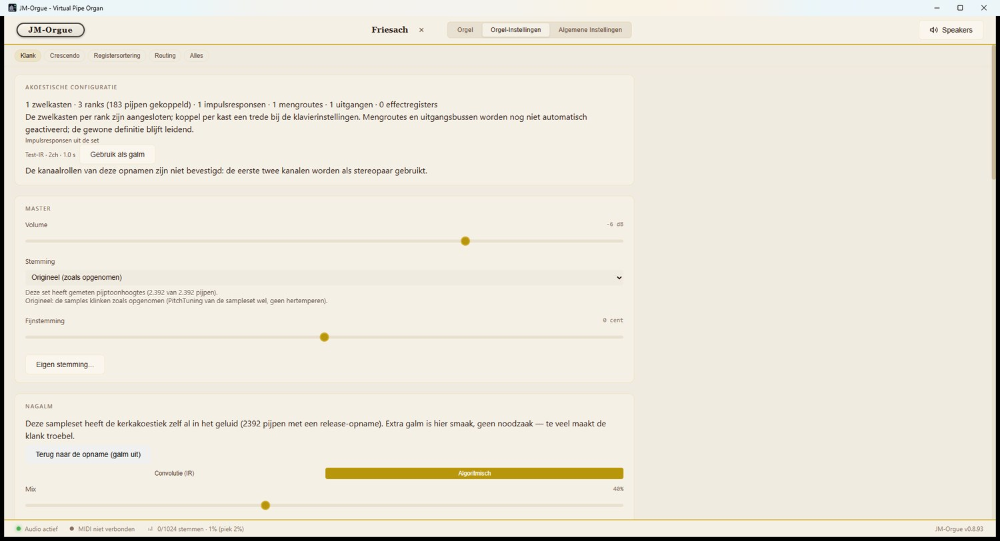
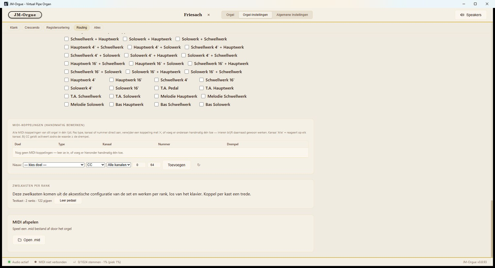
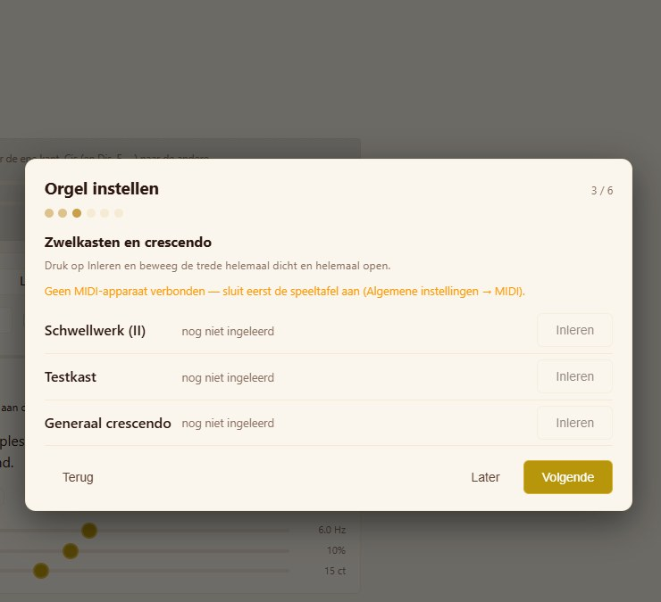
10. Sneltoetsen en tips
| Toets | Functie |
|---|---|
| F1 F2 F3 | Orgel, Orgel-Instellingen en Algemene Instellingen. |
| F11 | Volledig scherm (speeltafelmodus) aan of uit. |
| Esc | Volledig scherm uit. |
| Rechtermuisklik of 3 s ingedrukt | Op een knop van de setzerbalk: die knop aan een console-knop koppelen (MIDI inleren). |
| Dubbelklik op het volume | Hoofdvolume terug naar de standaardwaarde. |
| Kaart 3 s ingedrukt | In de bibliotheek: de foto van die kaart opnieuw zoeken. |
| Z…M en Q…I | Computertoetsenbord als klavier: twee octaven. Shift verschuift een octaaf omhoog, Alt een octaaf omlaag, ook samen. |
| Ctrl+N / O / S | In het notatievenster: nieuw stuk, openen, opslaan. |
- Alle instellingen worden bij elk orgel bewaard, ook als je het orgel sluit of het programma afsluit.
- Voor een vaste speeltafel: zet Automatisch starten bij Windows en Laatst geopende orgel automatisch laden aan, en gebruik de speeltafelmodus.
- Bij een opstelling met meer dan twee uitgangen: kies de uitgangen per klavier onder Routing, en daarna dezelfde uitgangen voor de bijgeluiden.
11. Problemen oplossen en feedback
| Probleem | Wat je kunt proberen |
|---|---|
| Geen geluid | Staat de motor aan? Staat onderin “Audio actief”? Staat onder Audio uitvoer het juiste apparaat, en kloppen de uitgangen per klavier met je audio-interface? Gebruik het testsignaal om de uitgangen te horen. |
| Het klavier reageert niet | Onderin staat “MIDI niet verbonden” zolang er geen MIDI-apparaat is. Controleer Algemene instellingen → MIDI en het MIDI-kanaal per klavier onder Routing. |
| Het orgel klinkt vals | Controleer of Pijpen automatisch bijstemmen aan staat, en kies onder Klank de stemming “Origineel” of de gewenste temperatuur. |
| Kraken of haperen | Verlaag de polyfonie, trek minder registers, zet de galm uit of kies een grotere buffer. Een korte startbuffer vraagt een snelle schijf; kies anders een langere. |
| Te weinig geheugen | Kies een kortere startbuffer, zet stereo-samples uit, of schakel luisterposities uit die je niet gebruikt. |
| Bijgeluiden of effectregisters horen niet bij de juiste speaker | Kies onder Routing bij “Audio-uitgang bijgeluiden” dezelfde uitgangen als voor de klavieren. |
| Pijpen zwijgen en bovenin staat een melding over WavPack of FLAC | WavPack leest het programma zelf; blijft de melding staan, dan gaat het om bestanden die niet te lezen zijn (FLAC, hybride of meerkanaals WavPack). Zet de set om naar gewone WAV of vraag de maker om een onverpakte versie. |
| De zweltrede doet onderaan weinig en bovenaan veel | Verhoog onder Routing bij de zwelkast de afsnijfrequentie bij een dichte kast (standaard 1500 Hz) of verlaag het minimale volume. |
| Een orgel laadt per ongeluk of te lang | Druk op Annuleren in het laadscherm; het vorige orgel blijft klinken. |
Feedback sturen (Algemene instellingen → Update en feedback) maakt een bericht met je melding en de logbestanden van de laatste sessies, zodat de ontwikkelaar kan zien wat er gebeurde. Je kunt je melding ook op de projectpagina op GitHub plaatsen.